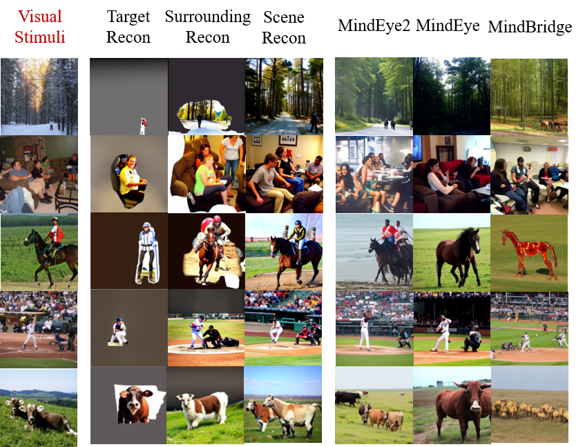
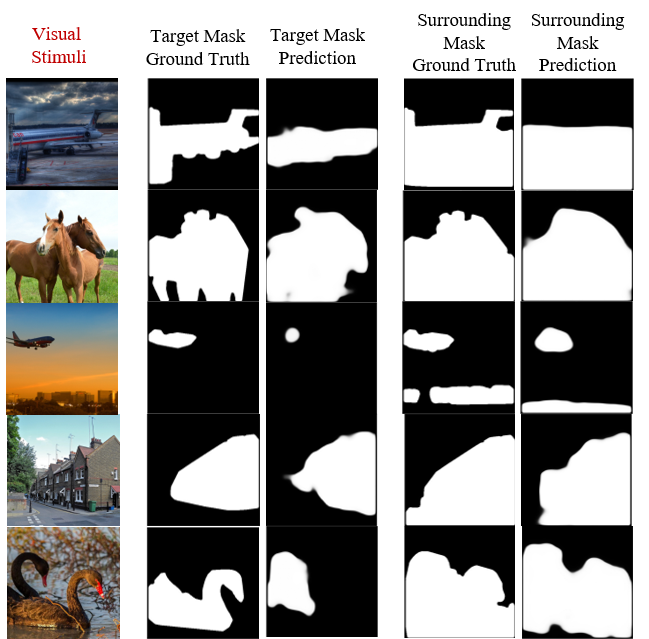
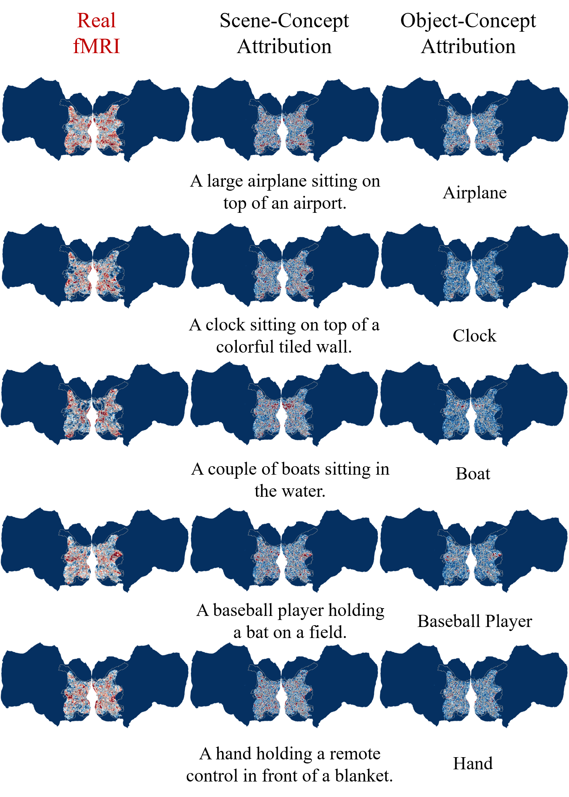
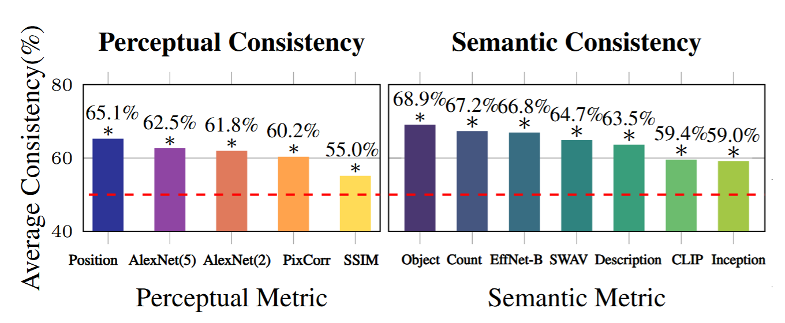

Qualitative supplementary visualization corresponding to the attached reconstruction/retrieval result.

Qualitative visualization on stratified semantic decoding.

Qualitative visualization on layout decoding.

Qualitative visualization on neural interpretability via voxel-wise analysis.

User study results. Horizontal red lines denote the random chance. Stars indicate significantly above random chance (p << 0.01, one-sided binomial test).
| Methods | Setting | PixCorr ↑ | SSIM ↑ | AlexNet (2) ↑ | AlexNet (5) ↑ | Inception ↑ | CLIP ↑ | EffNet-B ↓ | SwAV ↓ |
|---|---|---|---|---|---|---|---|---|---|
| MindEye | Single-subject | 0.309 | 0.323 | 94.7% | 97.8% | 93.8% | 94.1% | 0.645 | 0.367 |
| MindEye | Multi-subject | 0.129 | 0.255 | 84.2% | 89.2% | 84.1% | 85.0% | 0.812 | 0.487 |
| MindStrata | Single-subject | 0.296 | 0.344 | 95.9% | 98.2% | 94.8% | 94.8% | 0.614 | 0.343 |
| MindStrata | Multi-subject | 0.298 | 0.344 | 96.0% | 98.4% | 95.5% | 95.4% | 0.609 | 0.339 |
Quantitative comparison between single-subject and multi-subject settings for MindEye and MindStrata.
| Methods | PixCorr ↑ | SSIM ↑ | AlexNet (2) ↑ | AlexNet (5) ↑ | Inception ↑ | CLIP ↑ | EffNet-B ↓ | SwAV ↓ |
|---|---|---|---|---|---|---|---|---|
| MindBridge | 0.112 | 0.229 | 79.6% | 89.0% | 82.3% | 86.7% | 0.840 | 0.520 |
| MindEye2 | 0.235 | 0.428 | 88.02% | 93.33% | 83.56% | 80.75% | 0.798 | 0.459 |
| MindAligner | 0.226 | 0.415 | 88.19% | 93.26% | 83.48% | 81.76% | 0.800 | 0.459 |
| MindStrata | 0.229 | 0.403 | 88.56% | 93.62% | 83.71% | 81.28% | 0.790 | 0.461 |
Quantitative comparison on the new subject adaptation setting across MindBridge, MindEye2, MindAligner, and MindStrata.
| [Nexs(g), Nexs(r), Nexs(l)] | Params (M) | PixCorr ↑ | SSIM ↑ | Alex(2) ↑ | Alex(5) ↑ | Incep ↑ | CLIP ↑ | EffNet-B ↓ | SwAV ↓ | Description-level ↑ | Object-level ↑ | Count-level ↑ | Position-level ↑ |
|---|---|---|---|---|---|---|---|---|---|---|---|---|---|
| [1, 1, 1] (Random) | 620 | 0.002 | 0.163 | 50.1% | 49.7% | 49.5% | 50.0% | 0.977 | 0.660 | 0.083 | 0.182 | 0.129 | 0.023 |
| [1, 1, 1] | 620 | 0.333 | 0.347 | 96.6% | 98.3% | 94.6% | 94.3% | 0.628 | 0.351 | 0.525 | 0.440 | 0.391 | 0.215 |
| [4, 4, 4] | 648 | 0.338 | 0.350 | 97.3% | 98.6% | 95.4% | 94.8% | 0.615 | 0.343 | 0.538 | 0.462 | 0.410 | 0.224 |
| [16, 16, 16] | 762 | 0.341 | 0.353 | 97.6% | 98.8% | 95.3% | 94.9% | 0.609 | 0.335 | 0.543 | 0.476 | 0.426 | 0.231 |
| [64, 64, 64] | 1,214 | 0.342 | 0.353 | 97.8% | 99.0% | 96.1% | 95.8% | 0.598 | 0.329 | 0.545 | 0.483 | 0.433 | 0.235 |
Ablation on the number of brain-semantic token triplets and its effect on reconstruction and semantic fidelity. Random denotes a lower-bound baseline where the real fMRI input is replaced with randomly sampled Gaussian noise.
| Setting | Backbone / DM | MindStrata | Baseline |
|---|---|---|---|
| Training time | ViT-L/14 | 20h | 19h (MindEye) |
| Training time | ViT-bigG/14 | 44h | 75h (MindEye2) |
| Inference time | VD | 4.161s | 2.582s (MindEye) |
| Inference time | SDXL unCLIP | 7.492s | 5.207s (MindEye2) |
Training and inference efficiency comparison between MindStrata and representative baselines.
| Methods | PixCorr ↑ | SSIM ↑ | AlexNet (2) ↑ | AlexNet (5) ↑ | Inception ↑ | CLIP ↑ | EffNet-B ↓ | SwAV ↓ | Description-level ↑ | Object-level ↑ | Count-level ↑ | Position-level ↑ |
|---|---|---|---|---|---|---|---|---|---|---|---|---|
| MindEye | 0.379 | 0.341 | 96.6% | 98.1% | 94.5% | 94.6% | 0.638 | 0.363 | 0.529 | 0.437 | 0.410 | 0.181 |
| MindEye (Stratified) | 0.373 | 0.336 | 97.4% | 98.6% | 95.5% | 95.2% | 0.622 | 0.347 | 0.538 | 0.451 | 0.422 | 0.215 |
| MindBridge | 0.164 | 0.289 | 88.9% | 95.7% | 92.2% | 94.8% | 0.711 | 0.415 | 0.481 | 0.376 | 0.358 | 0.138 |
| MindBridge (Stratified) | 0.158 | 0.280 | 90.3% | 96.4% | 93.7% | 95.2% | 0.693 | 0.397 | 0.498 | 0.392 | 0.370 | 0.175 |
Stratified variants of MindEye and MindBridge show consistent gains on all semantic metrics.
| Configuration | Target Region mIoU ↑ | Target Region N-CD ↓ | Target Region N-ASD ↓ | Surrounding Region mIoU ↑ | Surrounding Region N-CD ↓ | Surrounding Region N-ASD ↓ |
|---|---|---|---|---|---|---|
| Random | 6.98% | 16.20% | 13.43% | 44.09% | 11.50% | 8.88% |
| Nsdgeneral | 38.20% | 10.80% | 6.59% | 56.58% | 8.46% | 6.23% |
Performance on layout decoding. Random baseline utilizes random values to establish a lower bound for performance. Nsdgeneral encompasses the entire general visual cortex as a reference.
| Method | ViT | Multi‑subject | fMRI‑to‑image | Image‑to‑fMRI | fMRI‑to‑text | Text‑to‑fMRI |
|---|---|---|---|---|---|---|
| MindEye | ViT‑L/14 | No | 97.01% | 94.77% | 5.12% | 4.43% |
| Ours | ViT‑L/14 | No | 96.88% | 95.36% | 37.26% | 32.81% |
| Ours | ViT‑L/14 | Yes | 97.94% | 96.17% | 36.94% | 31.69% |
| MindEye2 | ViT‑bigG/14 | No | 99.93% | 99.71% | 4.62% | 3.89% |
| MindEye2 | ViT‑bigG/14 | Yes | 99.56% | 99.42% | 4.38% | 3.61% |
| Ours | ViT‑bigG/14 | No | 99.87% | 99.68% | 30.48% | 28.23% |
| Ours | ViT‑bigG/14 | Yes | 99.99% | 99.97% | 30.93% | 27.74% |
Quantitative evaluation of retrieval performance